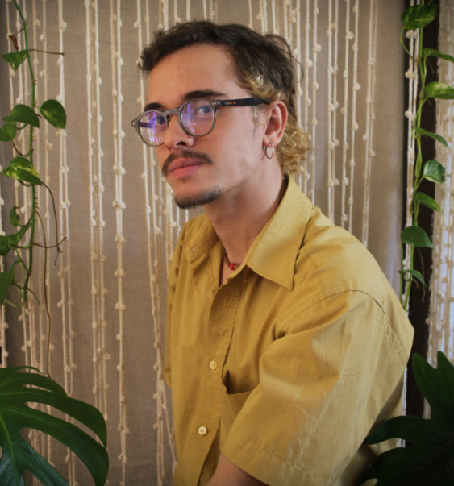
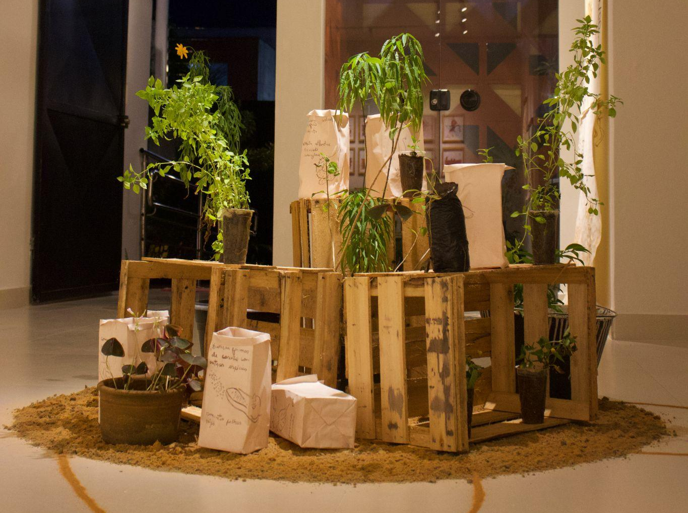
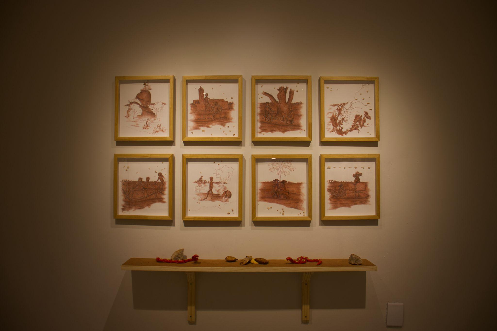
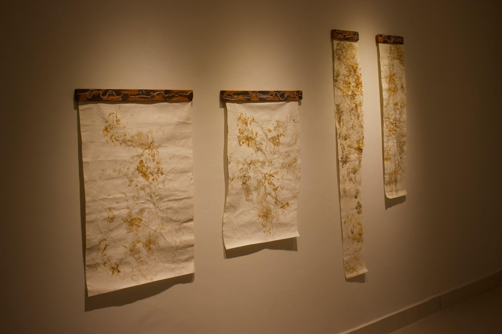

Diego Dionísio

Sou artista visual, pesquisadore e arte-educadore. mestrande no Programa de Pós-Graduação em Artes Visuais pelo (PPGAV UFPB/UFPE) e Licenciade em Artes Visuais pela (UFRN). Minha investigação concentra-se nas práticas multidisciplinares e propositoras, buscando refletir sobre as relações entre corpo, brincadeira, floresta, parentesco e sociedade na era do Antropoceno. A partir dessas perspectivas, procuro traçar caminhos de aproximação multiespécie que contraponham a lógica da devastação capitalista, apostando na construção coletiva e na reconexão entre os seres viventes. Participei das exposições coletivas "Estamos aqui" na galeria Margem Hub (Natal-RN), 6ª Bienal do Sertão de Artes Visuais "Educar a paisagem" (Juazeiro do Norte-CE), "Festival ponte entre nortes" na casa de cultura de sobral (Ceará), 3ª Edição do CHAMA com o espaço Cultural Candeeiro PINHOLEDAY - "22ª Edição Belém: Tempo Destino" (Pará), VIII Salão Dorian Gray de arte potiguar na Pinacoteca do RN (Natal-RN). Em 2023, realizei minha primeira exposição individual "Atravessar Musgo" na Galeria Candeeiro (Natal-RN).
Projetos

Traço, Traço, Colheita, 2022-2026
Em Atravessar Musgo volto a pensar a planta e o alimento, como proposição de aproximação às espécies vivas. A partir da PANC, que são plantas que se desenvolvem de maneira rápida e em diversos solos, busco propor formas de compreensão desses tipos de plantas como possível alimento. A intenção aqui é que essas questões nos coloquem a refletir sobre a importância de um sistema que se retroalimenta na forma de ciclo contínuo e, que para isso funcionar, precisamos ir na contramão das formas capitalistas de se alimentar.

Entre a quebra e o respiro, 2024
Entre a quebra e o respiro tem como desejo, riscar narrativas pensadas nesse território como forma de recuperar uma terra que foi tomada. Por meio da autoficção, evoco as fotografias antigas e contações de familiares. Quero relacionar a ideia do desenho a partir das imagens fotográficas, criando um outro fluxo na história, uma ficção dessas vivências no Riachão - Lagoa de Dentro/PB, onde o rio e outros seres eram o centro da vida, cuidado, afeto e sobrevivência.

Criaturas vivas se beijam no calor de dezembro, 2025
A série é uma investigação que experimenta desenhos formados com areia molhada pelas marcações das rochas e do percurso do Riachão, lugar que fica em volta ao rio Pirari, em Montanhas/RN e Lagoa de Dentro/PB. O percurso do rio é cavado em riscos de carvão e terra. Encontros, quebras e sinuosas aberturas de rochas confluem o caminho do rio. Há presença de vida nas rochas, rios e chão. Existe diálogo entre sólidos e líquidos, de modo que viram lama. São prerrogativas de existências que compartilhamos com tudo que é vivo.